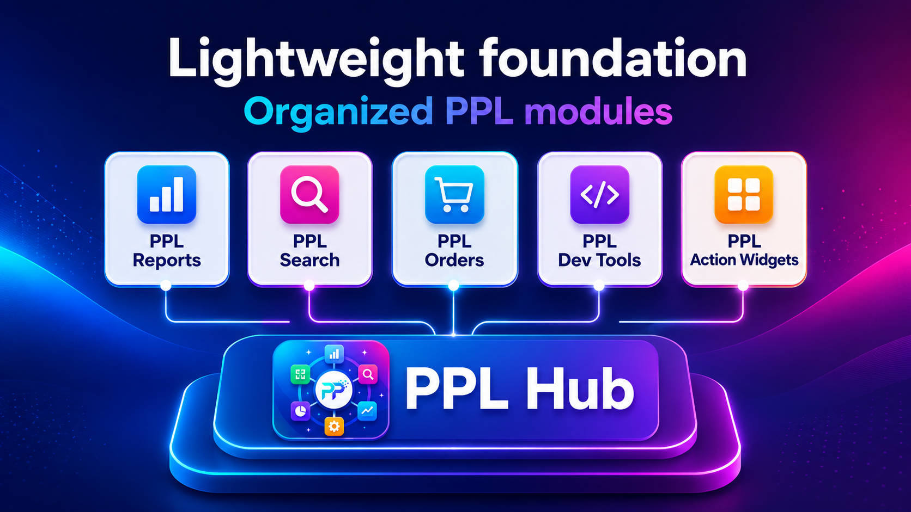

Magento admin foundation module
PPL Hub
PPL Hub provides the shared Magento admin menu root for PPL modules.
Version 1.0.0
Magento admin
Shared dependency

PPL Hub provides the shared Magento admin menu root for PPL modules.
Hub provides the admin menu entry and common identity layer used by search, reports, developer tools and action modules.
PPL extensions appear under one admin menu root instead of scattering through unrelated menus.
Feature modules can depend on Hub without pulling in heavy reporting or storefront behavior.
Reports, search, order tools, developer tools and action widgets can share one Magento admin area.
